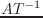

parallel-projectionとperspective-projectionクラスは、
投影変換を処理する。この変換は4X4の行列で表現される。すなわち、変換は
3次元の同次座標系で与えられる。
projectionクラスは、両方のクラスの抽象クラスである。
これらの投影クラスは、viewingクラスを継承しているので、
2つの座標変換（ワールド座標からviewing座標系への変換と投影変換）を
同時に実行することができる。
3Dベクトルと:project3メッセージを投影オブジェクトに送ることにより、
4要素の実数ベクトル返す。
homo2normal関数は、この同次ベクトルを標準のベクトル表現に変換
するために使用される。
その結果は、標準デバイス座標系(NDC)と呼ばれる座標系上に表現される
ベクトルである。
その中で、見えるベクトルはそれぞれのx,y,z次元において-1から1までの
範囲で表される。
ロボット世界の本当のカメラをシミュレートするために、
perspective-projectionはparallel-projectionよりも多く使用される。
perspective-projectionは、定義されているパラメータが少し多い。
screenxとscreenyは、見える物体が投影されるviewing平面の上のwindowの大きさで、
大きな画面と広い空間が投影される。
viewdistanceは、視点とview平面との距離を定義しているが、
視角にも関係する。
viewdistanceを大きくすると、view平面のwindowに狭い範囲が投影される。
hitherとyonパラメータは、クリップする平面の前面と後面の距離を
定義する。
これら2つの平面の外側に位置するオブジェクトは、クリップから除外される。
実際に、このクリップ処理はviewportオブジェクトによって実現されている。
projection [クラス]
:super viewing
:slots (screenx screeny hither yon projection-matrix)
-
- 4x4行列であらわされる投影変換を定義する。
:projection &optional pmat [メソッド]
-
-
もし、pmatが与えられたならば、
projection-matrixのスロットに設定する。
:projectionは、現在の4x4投影行列を返す。
:project vec [メソッド]
-
-
vecは、4要素を持つ3次元同次ベクトルである。
vecは、投影行列により変換される。
そして、変換された結果である同次表現が返される。
:project3 vec [メソッド]
-
-
vecは、標準の3Dベクトル。
vecは、投影行列により同次化され変換される。
そして、変換された結果である同次表現が返される。
:view vec [メソッド]
-
-
vecにviewing変換と投影変換を連続的に適用する。
そして、変換された結果である同次表現が返される。
:screen xsize (&optional (ysize xsize)) [メソッド]
-
-
viewing画面の大きさを変える。
大きくすると、広いviewが得られる。
:hither depth-to-front-clip-plane [メソッド]
-
-
視点からクリップ前面までの距離を決定する。
このクリップ前面よりも前にあるオブジェクトはクリップから除外される。
:yon depth-to-back-clip-plane [メソッド]
-
-
視点からクリップ後面までの距離を変える。
このクリップ後面よりも後ろにあるオブジェクトはクリップから除外される。
:aspect &oiptional ratio [メソッド]
-
-
アスペクト比は、screen-yとscreen-xとの比である。
もし、ratioが与えられたならば、
アスペクト比は変えられ、screen-yはscreen-x * ratioに設定される。
:aspectは、現在のアスペクト比を返す。

-
- viewingとprojectionを初期化する。
parallel-viewing [クラス]
:super projection
:slots ()
-
- 平行投影を定義する。
hid(陰線消去関数)は平行投影では扱うことが出来ない。
:make-projection [メソッド]
-
-
perspective-viewing [クラス]
:super projection
:slots (viewdistance)
-
- 透視投影変換を定義する。
:make-projection [メソッド]
-
-
:ray u v [メソッド]
-
-
視点から正規化画面の上にある(u,v)への単位方向ベクトルを返す。
:viewdistance &optional vd [メソッド]
-
-
viewdistanceは、視点から画面迄の距離である。
もし、vdが与えられたならば、viewdistanceに設定される。
viewdistanceは、カメラの焦点距離と一致する。
vdを大きくすれば、ズームアップされたviewを得ることができる。
:viewdistanceは、現在のviewdistanceを返す。
:view-angle &optional ang [メソッド]
-
-
画面の対角線を見込む角度がangラジアンであるように画面の大きさを設定する。
20度(約0.4ラジアン)から50度(約0.9ラジアン)までの角度が自然な透視view
を生成することができる。
角度を大きくすると歪んだviewを生成する。
そして、狭くすると直角(平行)viewingのような平坦なviewが生成される。
:view-angleは、現在の視角あるいは新しい視角をラジアンで返す。
:zoom &optional scale [メソッド]
-
-
もし、scaleが与えられたならば、画面はscaleによって
現在の大きさを相対的に変化させる（viewdistanceは変化しない）。
もし、scaleに0.5を与えるならば、以前のviewより2倍広いviewを得られる。
:zoomは、新しい視角をラジアンで返す。
:lookaround alfa beta [メソッド]
-
-
視点を移動し回転させる。
回転中心は、視線の上でhither平面とyon平面の中間点
に与えられる。
viewing座標系は、ワールド座標系のz軸回りにalfaラジアン回転し、
ローカル座標系のx軸回りにbetaラジアン回転される。
:lookaroundは、viewingの中心にあるオブジェクト回りに視線を
動かすことができる。
:look-body bodies [メソッド]
-
-
視線、画面の大きさおよびhither/yonをすべてのbodiesに適合するviewport
となるよう変える。視点は変化しない。
視線は、すべてのbodiesのbounding boxの中心を通る視線から選択される。
:init &key (:viewdistance 100.0) &allow-other-keys [メソッド]
-
-
2016-03-23